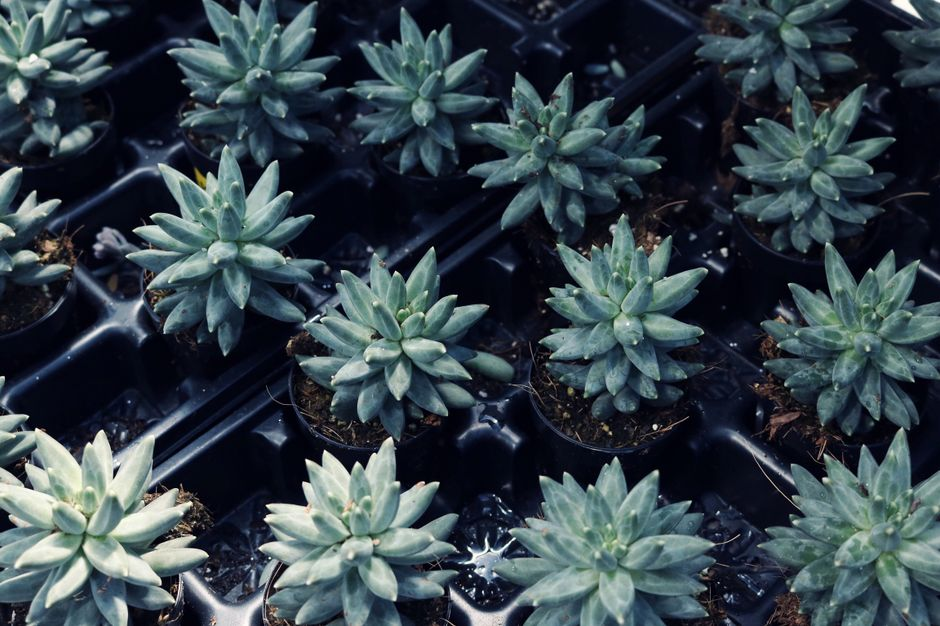

Plantas de interior ideales para los principiantes

Photo: Madison Inouye / Pexels
Para empezar conviene elegir plantas tolerantes, que perdonen un riego olvidado o una luz imperfecta. Estas son cinco opciones fiables, con lo que debes saber sobre su toxicidad si tienes un perro o un gato.
1. Cinta o planta araña (Chlorophytum comosum)
Le gusta la luz brillante pero indirecta y la tierra ligeramente húmeda. Produce pequeños hijuelos fáciles de multiplicar. Se considera no tóxica para gatos y perros, aunque si come mucha puede sentarle mal.
2. Sansevieria (lengua de suegra)
Muy resistente, tolera poca luz y los olvidos de riego. Deja que el sustrato se seque por completo entre riegos. Es tóxica para gatos y perros si la muerden.
3. Pothos (Epipremnum aureum)
Crece colgante o trepadora, tolera luz moderada y enraíza fácilmente en agua. Riega cuando los dos o tres primeros centímetros de sustrato estén secos. Es tóxico para gatos y perros: cuélgalo fuera de su alcance o elige otra planta.
4. Zamioculca (Zamioculcas zamiifolia)
Almacena agua en sus rizomas y prefiere riegos poco frecuentes. Tolera luz baja o media. Es tóxica si se mastica y su savia puede irritar la piel: lávate las manos después de manipularla.
5. Peperomia
Pequeña, decorativa y fácil, le gusta la luz indirecta y que el sustrato se seque un poco entre riegos. Se considera, en general, segura para gatos y perros.
Consejos rápidos
- Elige una maceta con agujero de drenaje.
- Riega cuando el sustrato esté seco en la superficie, no por costumbre.
- Evita el sol directo a través del cristal, salvo en suculentas.
Las plantas no purifican el aire de la casa de forma medible: elígelas por el gusto de verlas crecer. Si tu mascota se come parte de una planta, llama de inmediato a tu veterinario o a un centro de toxicología, sin esperar a que aparezcan síntomas.